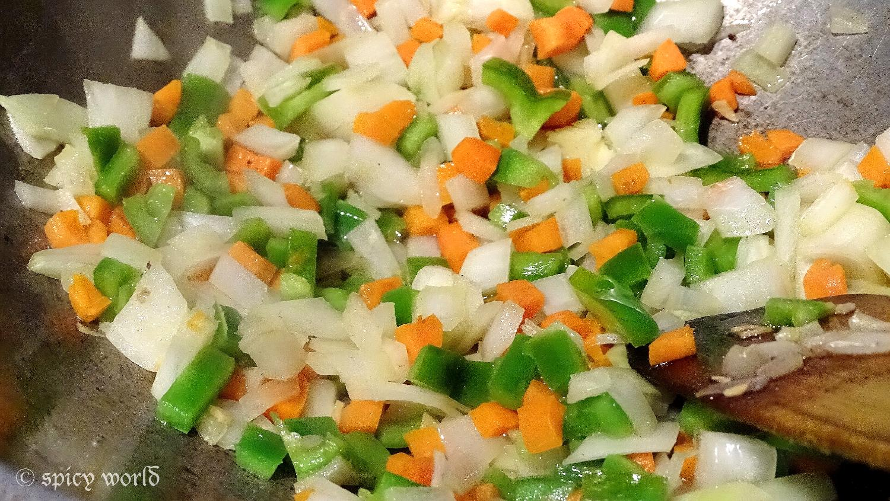
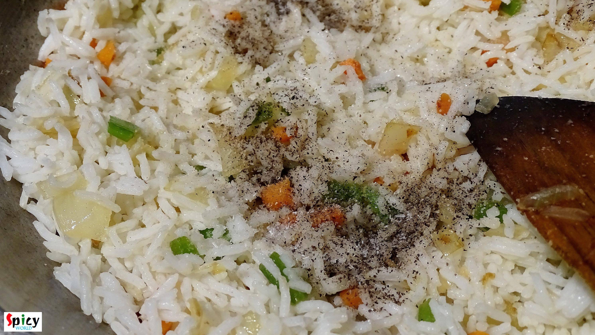
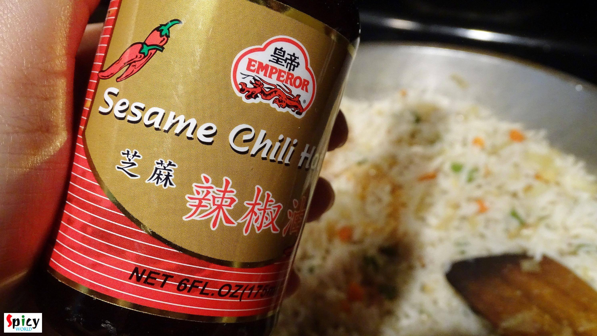
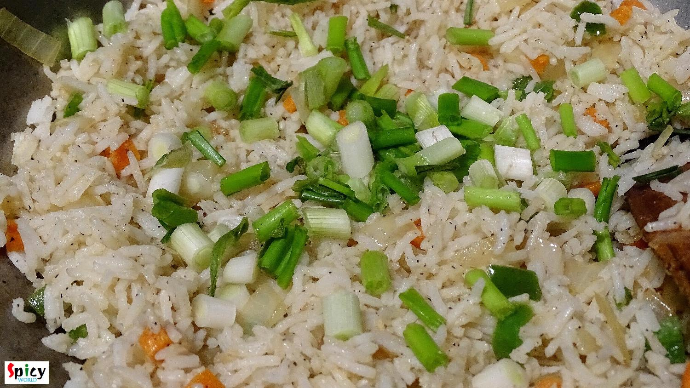

Chinese (style) Fried Rice
I guess almost everybody love indo-chinese food. The recipe of this fried rice is also indo-chinese and homemade version. I heard from many foodies that in homemade fried rice, there is always lack of that chinese flavour / restaurant flavour. But after following this recipe, you will forget about this complain. You can serve various side dishes with this kind of 'fried rice'. Try this in your kitchen and let me know about your 'chinese cooking' story.
 Fried Rice")
Ingredients
- 4 cups of left over rice (for best result).
- 1 cup of finely chopped mix veggies (carrots, capsicum, french beans, onion, cabbage, mushrooms).
- 1 clove of garlic finely chopped.
- 2 green chilies finely chopped.
- 1 Teaspoon black pepper powder.
- 1 Teaspoon white pepper powder.
- 1 Teaspoon soy sauce.
- 1 Teaspoon sesame oil.
- ½ Teaspoon msg (optional).
- Salt.
- Some chopped spring onion.
- 3 Tablespoons of white oil.
 Fried Rice")
Steps
Heat white oil in a wok.
Add chopped garlic and green chilies. Saute them for 30 seconds.
Add the chopped mix veggies with pinch of salt. Fry them in high flame for 5-6 minutes.

Then add the left over rice, soy sauce, msg, salt, black and white pepper powder. Mix them very well for 4 minutes.

Now add the sesame oil. Mix the oil with the rice very well for 2 minutes.

Lastly add some chopped spring onion and mix it.
Check the seasoning and adjust it according to your taste.

Then turn off the heat.
Your Fried rice is ready ...
- Serve this hot with any type of gravy ...
 Fried Rice (Final)")